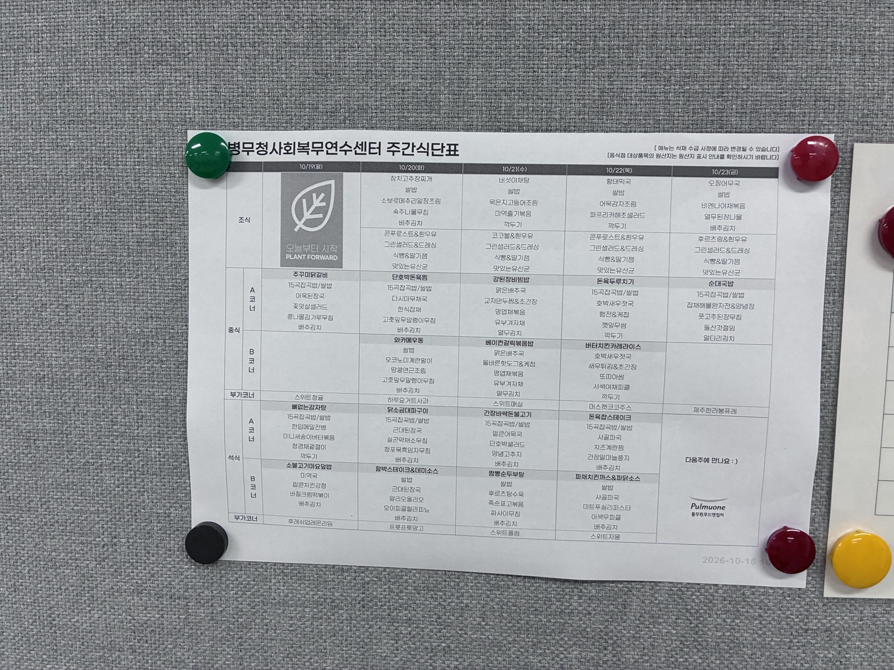

WEEKLY MENU
든든한 한 끼,
가벼운 한 주.
이번 주 메뉴를 미리 살펴보세요.
▦ 2026. 10. 19 — 10. 23 10월 넷째 주
식단을 불러오고 있습니다
ⓘ 메뉴는 식재 수급 사정에 따라 변경될 수 있습니다.
음식의 원산지는 식당의 원산지 표시 안내를 확인해 주세요.
홈 화면에 추가하기
Android: 브라우저 메뉴에서 ‘앱 설치’ 또는 ‘홈 화면에 추가’를 선택해 주세요.
한 번 온라인으로 불러온 식단은 오프라인에서도 확인할 수 있습니다. 원본 PDF와 사진은 온라인에서 한 번 열어야 저장됩니다.
원본 식단표 보기
첨부해 주신 PDF의 메뉴와 알레르기 표시를 기준으로 정리했습니다.
식단 · 알레르기 원본 PDF 열기 ↗